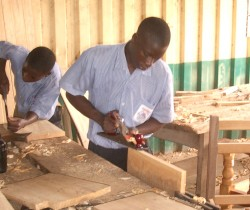
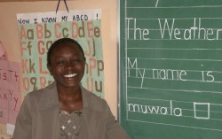
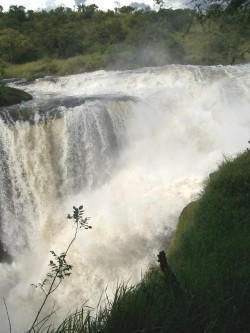

November 2004
Bram Moolenaar, penningmeester van ICCF Holland, bezocht het Kibaale Children's centre in november 2004. Dit is zijn verslag.
Saai?
Meer van hetzelfde. Dat zou de saaie samenvatting kunnen zijn van mijn reis.
Maar dit betekent eigenlijk dat het heel goed gaat. Meer dan eens zakt een
project in Afrika na een paar succesvolle jaren in elkaar. Dus een
kindercentrum dat meer als tien jaar terug begon en voortdurend groeit mag als
een bijzondere prestatie worden beschouwd.
Ik heb tijdens mijn bezoek veel fotos gemaakt.
Klik op de plaatjes hieronder om een grotere versie te zien.
Meer fotos zijn hier te vinden.
School
Er zijn weer een paar klassen bijgekomen, een voor de basisschool en een voor
de middelbare school. Over een paar jaar zijn er twee klassen op elk
niveau. Bij de lagere school is een blok met twee klaslokalen gebouwd. De
praktijkopleiding, met kleermakers-, timmer- en metselklassen, loopt nog
steeds goed. De timmermannen in opleiding waren bezig met het maken van
stoelen en tafels voor de nieuwe bibliotheek en studiezaal van de middelbare
school. Een goed voorbeeld hoe de kinderen een bruikbaar vak leren. En
tegelijk besparen we geld! Er zijn nu in totaal zo'n zevenhonderd kinderen in
de school. De laatste klas van de basisschool, P7, deed examen tijdens de
twee weken dat ik op het project was. Om de kinderen te helpen met hun studie
mochten ze in de school slapen. Ze kunnen dan in de avonduren leren bij het
licht van onze generator.
Vierenveertig kinderen in S4, de hoogste klas van de middelbare school, deden
hun laatste examens: biologie en kiswahili. Dit is voor hun de laatste
klas op het project. Zodra de uitslagen binnen zijn moeten ze beslissen wat
ze vervolgens gaan doen. We hopen dat velen kunnen gaan studeren, een leraren
opleiding gaan doen of iets dergelijks. Maar dat kost veel geld. Niet alleen
voor de opleiding, ze moeten ook een onderkomen regelen, aangezien deze
scholen ver weg zijn. Dit soort vervolg opleidingen kunnen ze alleen doen als
de sponsor aanbiedt het grootste deel van de kosten te betalen.
Een opmerkelijke groep is de "special needs" klas. Het zijn vijf dove
kinderen en vijf kinderen die licht geestelijk gehandicapt zijn. Ik sprak met
hun lerares Judith. Het is voor haar een uitdaging om deze kinderen les te
geven, omdat het erg veel tijd kost om ze iets bij te brengen. De vooruitgang
die de kinderen boeken en de lach op hun gezicht is haar beloning. Deze
kinderen worden nog niet gesponsord, terwijl ze extra leerkrachten nodig
hebben en dus meer kosten. Maar we zullen zeker doorgaan met het helpen
van deze behoeftige kinderen.
|
|
|

Jongens in de timmerklas maken stoelen voor de nieuwe bibliotheek

Judith, lerares van de "special needs" klas
|

Zuster Annet praat met een patient in de kliniek; let op de tekst rechtsboven
|
|
|
Kliniek
De kliniek was druk als altijd. Toen maandagmorgen de dokter arriveerde
gingen de patiënten snel in de rij staan, wachtende op hun consult. Dit
duurde de hele dag, de dokter ging pas naar huis toen het al donker was.
Gelukkig krijgen we nu de meest gebruikte medicijnen van de overheid. Maar
het personeel, behandeling van minder vaak voorkomende aandoeningen en dure
medicijnen moeten nog steeds door ons betaald worden. De helft van de
eenmalige donaties wordt hiervoor gebruikt.
|
Staf
Er zijn nu vijf buitenlandse vrijwilligers. Jackie Ammeter is al vijf jaar de
directeur van het project. Ze begrijpt de locale bevolking erg goed en weet
hoe ze de problemen moet aanpakken die elke dag de kop opsteken. Kenny
Corpeno doet nu de administratie van de gesponsorde kinderen. Alle brieven
van en naar sponsors komen bij haar langs. Ze handelt ook speciale verzoeken
af van kinderen die extra hulp nodig hebben, bijvoorbeeld wanneer ze geen eten
meer hebben. Dat is helaas vaak gebeurt dit jaar, omdat er in de eerste helft
van het jaar veel te weinig regen viel en oogsten mislukten. Ik ben blij dat
ik Kenny heb leren kennen en hoop dat ik nog lang met haar kan samenwerken.
Margaret Kolthammer doet de administratie van de school. Sandi en Earl helpen
Jackie met wat er maar moet gebeuren. Een prima team, ik ben hen dankbaar
voor hun gastvrijheid en gezelschap gedurende mijn bezoek.
Er is een groot aantal Ugandese medewerkers op het project, ongeveer tachtig.
Te veel om ze allemaal te leren kennen. Sommige van de veteranen zijn de
opzichter Patrick en zijn vrouw en lerares Ellen, de welzijnswerker Cephas, de
kok Bira en hoofdmeester Peter. Het is goed te zien dat zo veel werk door
Ugandezen wordt gedaan en dat hun ervaring groeit. Ze vormen een sterk team
dat het project draaiende houdt. Dat ze goed samenwerken kan afgeleid
worden aan het groeiende aantal stellen dat er uit voortkomt :-).
|
|
|

Vrijwilligers: Jackie, Margaret, Earl, Sandi, Kenny (en ikzelf)
|

Murchison Falls
|
|
|
Problemen
Is er niets negatiefs te melden? Nou, niet op grote schaal. Maar er zijn van
die problemen die steeds weer terug komen, zoals meisjes die zwanger raken en
voogden die kinderen mishandelen. Ook al doen we vele pogingen om dit te
voorkomen, het gebeurt nog steeds. Ik denk dat we zeker door moeten gaan met
veel moeite steken in het geven van voorlichting, zodat het aantal problemen
op den duur minder wordt.
Natuur
De afgelopen jaren had ik maar beperkt tijd in Uganda en kon ik alleen het
project in Kibaale bezoeken. Gelukkig had ik deze keer kans om een weekend
naar Murchison Falls national park te gaan, een prachtig natuurpark. Er is
geen landbouw in dit gebied, de wilde beesten hebben voorrang. Ik heb
olifanten, giraffes, vele vogels en zelfs leeuwen gezien. De kern van het park
is een gigantische waterval in de Nijl. Het water valt vijftig meter naar
beneden met zoveel kracht dat de rotsen eromheen trillen. Dit park laat zien
wat een prachtig land Uganda is.
|
Communicatie
Als special doel voor deze reis wilde ik de communicatie faciliteiten op het
project verbeteren. Dat is altijd een probleem geweest, aangezien internet en
fax alleen in de stad te vinden zijn. Het antwoord op een simpele vraag
duurt vaak weken. De mobiele telefoon werkt in de omgeving, maar het signaal
bij het project is erg zwak. Ik had een speciale telefoon, antennes en kabels
meegenomen om mee te experimenteren. Helaas is de telefoon kapot gegaan
voordat ik enige metingen kon doen. Het duurde een week voordat duidelijk was
dat reparatie niet mogelijk was. Het lukte om een soortgelijke telefoon aan
te schaffen in de stad, maar die bleek niet met mijn antenne te werken. Dat
was erg teleurstellend. Maar toen keerde het tij: de "village phone" die
maanden terug al besteld was arriveerde twee dagen voor mijn vertrek. En daar
bleken mijn antennes ook op te passen. Rondlopend met een antenne op een paal
is het gelukt een aantal plaatsen te vinden met voldoende signaal. Daardoor
is het nu mogelijk op het project een telefoon te gebruiken, zonder eerst een
heuvel te hoeven beklimmen. De volgende stap is het opzetten van e-mail.
Maar voor de "village phone" had ik geen computer kabel, dus dat lukte niet
meer. Bovendien bleek voor e-mail een abonnement nodig te zijn, en dat kost
meer. Hopelijk lukt het binnenkort om hier geld voor te reserveren en e-mail
werkend te maken.
|
|
|

GSM antenne bij het kantoor
|
Conclusie
Ik had een hele goede tijd in Uganda en was erg blij om te zien dat het
project prima draait. Meer en meer kinderen profiteren van ons werk en onze
hulp. Ik kijk alweer uit naar mijn volgende reis!
Bram Moolenaar
meer fotos
top
|


{kind=link}
{kind=link}
{kind=link}